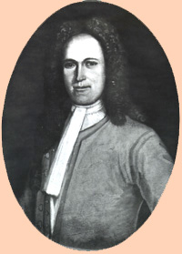

|
by Stefan Bielinski  David Davidse was born in Albany in 1669. He was the third son of the eight children born to New Netherland pioneers David Pieterse and Catharina Verplanck Schuyler. He grew up in his father's house on Market Street near the north gate of the Albany stockade. One of the leading Albany fur traders and landholders, David's father died in 1690 when the young man was twenty-years-old. In 1694, he married Elsie Rutgers, the daughter of a prominent Manhattan merchant. The couple had six children all of whom were baptized in the Albany Dutch church where both parents were members. Like other seventeenth-century Albany Schuylers, David Davidse built his fortune in the fur trade and was a prominent Albany merchant residing in the first ward. His status was recognized when he was elected assistant alderman in 1697. On behalf of the Albany government, several times he carried documents to the governor in New York. In 1699, he was elected first ward alderman and served for many years. He was an active council member and often was sent into the Indian country and to Canada on city business. In 1705, he was appointed sheriff of Albany city and county. He served for a year and he was appointed mayor of Albany in 1706. During his mayoralty, Albany began to develop its landed interests at Schaghticoke. Superceded as mayor by Robert Livingston, Jr., David Schuyler was elected alderman for the first ward in 1710. He was re-elected for the last time in September 1715. Perhaps because of the early death of his father and a relatively short life-span of his own, this third son was unlike other prominent Schuyler family members in that he did not acquire extensive investment lands. However, he would have been a partner in the Kaydaderosseras Patent had it been confirmed before his untimely death. David Davidse Schuyler died on December 16, 1715. He was forty-six years old.
Portrait painted about 1710 by Nehemiah Partridge. In the collection of the Albany Institute of History and Art. .first posted 5/01; revised 5/02 |